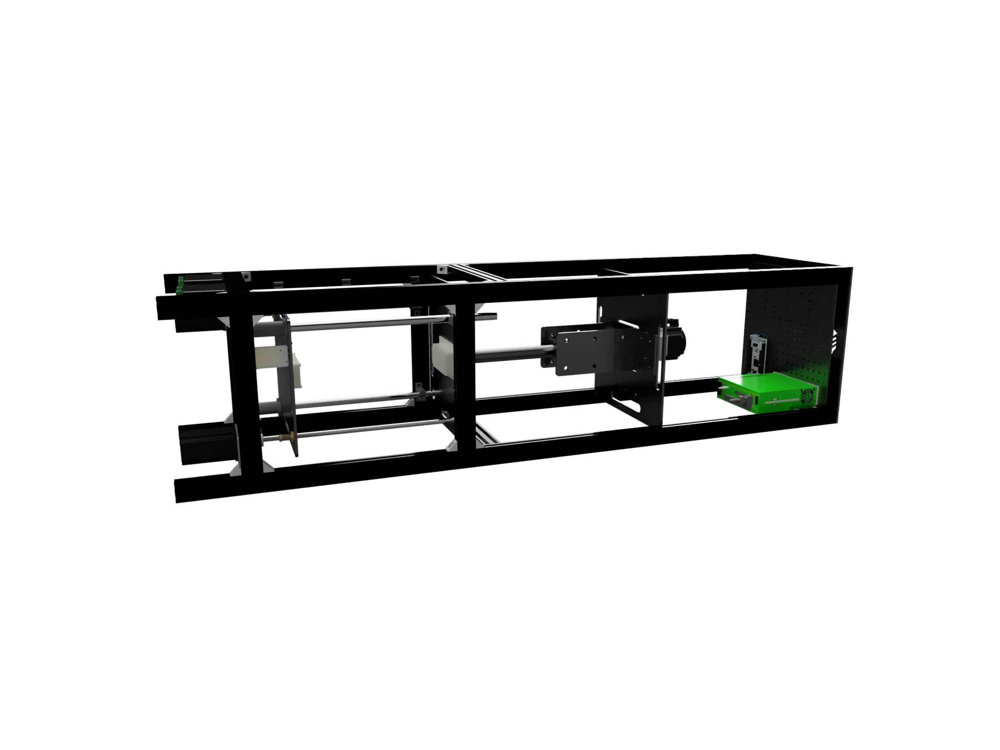
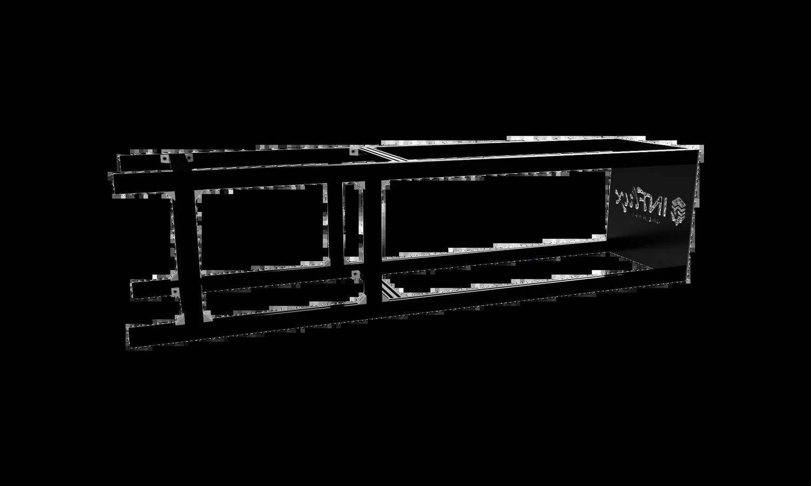
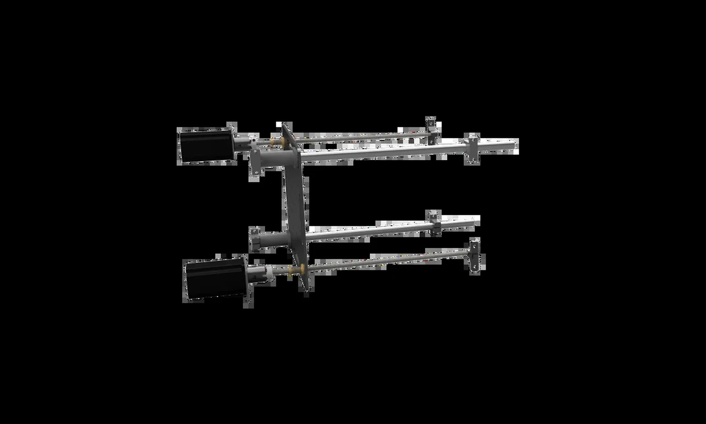
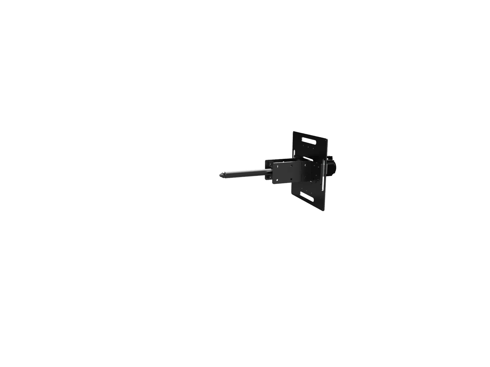
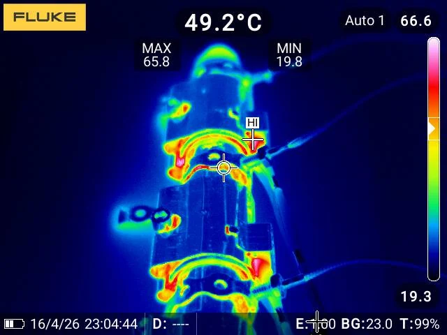

thermal campaign covering heat-up, stabilization, and cooldown behavior
Compact injection molding system
InFlux Origin MK1
A desktop-scale bridge between 3D printed prototypes and industrial tooling: real thermoplastic shots, water-cooled resin molds, and operator-grade control.

READY / SIMULATED
Cycle target
heat + clamp + inject + cool
95%
estimated tooling-cost reduction in compared scenarios
97.8%
estimated mold lead-time reduction versus simple conventional routes
+/-8%
thermal model agreement against SimScale validation
6331
thermal samples captured in the lab heating campaign
The machine
Built for the moment before steel tooling makes sense.
InFlux targets small functional parts, fast design loops, and practical learning from real injected plastic. It is not trying to replace industrial mass production. It is built for the expensive middle ground where teams need evidence before committing to a metal mold.
- Tooling
- 3D printed resin molds with internal water cooling
- Injection
- Compact piston-driven shot with hold and retract stages
- Control
- Machine firmware, bridge API, Android operator app
Machine views
Assembly viewer



Interactive assembly slot
Reserved for the complete web model once the Fusion export is ready.
Frame and guide rails
Alignment carries the process. The nozzle, plates, and mold must meet in the same place every cycle.
Repeatable cycle
A short, coherent process instead of a one-shot demo.
Mount mold
Position the mold with repeatable alignment.
The resin tool is fixed between support plates so the cavity, nozzle, and guide system stay coordinated.
InFlux Operator 2.0
Ready
Machine status
InFlux v1
SIM
State
Ready
Cycles
128
Thermal
Target 220 C
Operator stack
The app looks like a product because it is part of the machine.
The Android operator app carries the same control language as the hardware: compact panels, clear status, red action states, PIN-gated service controls, and direct communication through the ESP bridge API.
Dashboard. Mode, cycle count, thermal state, current job, and alarms.
Run control. Inject, heat, stop, cycle settings, and phase feedback.
Service layer. Manual movement, IO, web exposure, snapshot export, and PIN access.
Validation
The pitch is backed by measurements, not just CAD.
Lab testing captured heating, stabilization, cooling, and sensor-noise behavior. Simulation work compared an internal Python/OpenCL thermal model against SimScale to guide wall thickness, cooling-channel placement, and material-specific timing.

measured severe hot spot around the nozzle-to-tube joint
materials modeled for cooling and safe ejection windows
Who it is for
Fast proof for teams that cannot wait for a conventional mold.
Validate geometry, fit, and manufacturability before ordering steel tooling.
Move from display models to small functional thermoplastic parts.
Offer lower-barrier access to real injection molding experiments.
Run short batches and compare process choices without heavy tooling spend.
Ready to use
Show the project. Install the operator. Keep the story tight.
This site is the public showcase layer for the InFlux project. The latest Android operator APK is bundled for quick installs and demo handoffs.